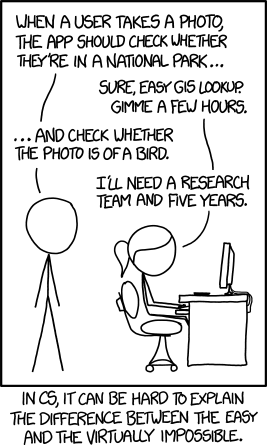

What does it mean to be a "duplicate"?
One of my recent projects asked me to look at the logic within a software package that took data from multiple sources, stored it in a database, and then provided curated access to the information so that only a single version of "duplicate entries" would be appropriately represented. As I worked through explaining this to the relevant lawyers in this case, I realized that such a simple question is quite challenging. As is often the case in computer technology cases, Randall Munroe has an apt cartoon capturing the quintessential essence of this particular question:

In my formative years, I had Paul Sally as an instructor for some of my classes. One thing I remember from that time was some of his work related to Lie Algebras and Fuzzy Sets (and my Google search today indicates work in L-fuzzification. These are integral parts of Fuzzy Mathematics. This type of mathematics is quite important today because it relates to Similarity Analysis. When we deduplicate complex data, it is a study in understanding similarity - but I get ahead of myself. If you are interested in the link, Fuzzy Logic for Similarity Analysis is one academic paper that discusses this (though there are others.) Thus, when asked about data deduplication, it reminded me of this earlier work I had learned about as an undergraduate mathematics student.
Let's start more simply, though. The simplest model of similarity would be to observe that two identical objects are similar. In other words, the strings "foo" and "foo" are the same.
At this point, you likely think I have demonstrated an amazing grasp of the obvious. Of course, these are the same thing. Let's suppose, instead, that our strings were "Foo" and "foo". Are these duplicates? Maybe. How do we define when something is a duplicate? Perhaps we broaden our definition so that we are case insensitive. This is straightforward for some alphabets but becomes more complicated when we expand the alphabet. W3C (the folks that establish the standards for the World Wide Web) defines case folding as it applies to web addresses. This is notable because web addresses are case-insensitive. Thus "https://www.wamason.com" and "https://WWW.WAMason.com" are the same. Yet, even this simple example can be more complex because only the internet part of the name is guaranteed to be case insensitive. When you use a name that is relative to the web server, then it might be case-sensitive. For example, my CV is currently at https://wamason.com/wp-content/uploads/2022/01/wamason-expert-2022-01-05.pdf. If I also list HTTPS://WAMASON.COM/wp-content/uploads/2022/01/wamason-expert-2022-01-05.pdf, you reach the same file. However, if the case changes in the part of the name the web server interprets, it may not be. https://wamason.com/Wp-content/uploads/2022/01/wamason-expert-2022-01-05.pdf will generate a "file not found' error, even though I only changed a single character of the name.
So, this is an example of how "duplicates" can be pretty subtle to determine. If one link works and the second does not, I can assert these are not duplicates. If they lead to the same object, I could argue they are duplicates. For the record, case sensitivity appears because my blog is hosted on a Linux-based server running WordPress, with a case-sensitive file system. If this were on a Windows server with a Windows-based implementation of WordPress, those two links would be identical.
Ah, this "duplicate" concept isn't quite so easy, is it?
The case that inspired this post today was about database records. Product information was retrieved from multiple different providers. The product information might describe the same product even though the details of the information vary slightly. This sort of data aggregation is common, and one of the challenges is to "eliminate duplicates." How do we define what a duplicate is? In the case of websites, we could see where the names lead, and if they lead to the same object, we could argue they are duplicates. However, this turns out to be potentially expensive. Suppose, for example, the links point to large files. I do not want to fetch those large files to verify they are identical. If I were ordering products, I might not want to order copies of two products I think might be duplicated to determine if they are actually duplicates. Thus, the cost of confirming two things are aliases for the same object or two instances of the same "thing" may be too high. Instead, I must heuristically determine if two descriptions will likely be duplicates.
This is not a deterministic process: we must realize that any heuristic will often generate both type 1 (false positive) and type 2 (false negative) errors. Our goal is to find the right balance between these two extremes. We typically use the concept of "distance" to see how "similar" two things are. Distance relates to the field of measure theory and is often realized with "metric spaces" (multi-dimensional spaces where we have a concept of distance.) One of the most straightforward metrics is the "trivial metric," which is what I first proposed: "foo" = "foo" and "Foo" != "foo". Thus the distance between two objects is either 0 ("identical") or 1 ("different"). That's easy for us to reason about but is not helpful for cases I described earlier, where things should be considered the "same" despite minor differences. When we generalize distance, we measure "how far" between two things. This idea of "how far" is our metric. We use some function to define this. In a single-dimensional space, this is typically just a number. We usually use the Euclidean metric when we generalize this to multiple dimensions. See Euclidean Distance. These metrics are surprisingly general. Shashwat Tiwari has an excellent Blog post on several practical distance metrics (including those for discrete sets): 7 Important Distance Metrics every Data Scientist should know.
From here, we can dive into "machine learning" (for example). A common approach in machine learning is to group "similar things" into distinct groups. I don't want to get too far into the weeds, but if you are interested in why similarity is important more broadly, read up on "Hyperplanes."
Let's get back to our original string-oriented problem. Perhaps you have found websites that detect when you misspell things or suggest completion strings. The idea here is to compute "string similarity," which uses Levenshtein Distance. When we consider multiple strings - like database records with comparable fields - we can combine distance metrics, such as by using Levenshein string similarity on the individual fields of a database record and then combining them using a Euclidean distance computation (or others like Hamming or Minkowski distances.)
Did I mention how complicated this becomes?
Thus, my point is that identifying "duplicates" when you have multiple data sources is a challenging problem. In litigation, this can become an issue when the implementation is complex, the data sources vary, and the meaning of "duplicate" is not easily defined. We can make this work given a static data set, but data sources are constantly evolving and changing in the real world. This often means that software developers are called upon to solve a very complex problem, directed by non-technical management that does not understand the problem's complexity.